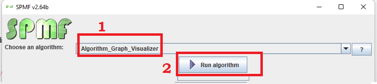
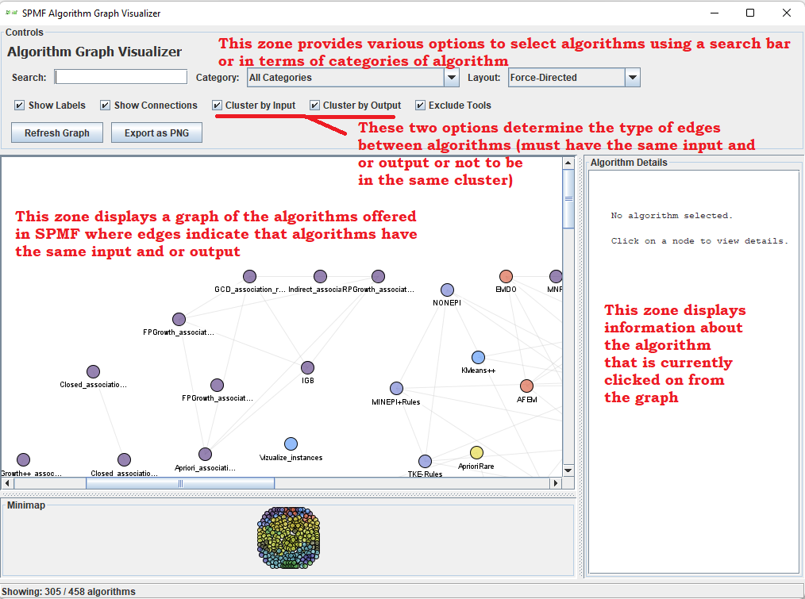

Visualize algorithms from SPMF as a graph using the Algorithm Graph Visualizer(SPMF documentation)
SPMF provides a simple Viewer Tool to view the content of an ARFF file from the graphical user interface of SPMF.
This webpage explains how to use this tool with an example.
How to run this example?
If you want to run this example from the graphical interface of SPMF, (1) choose the "Algorithm_Graph_Visualizer" algorithm, and (2) click "run algorithm"

- If you want to execute this example from the command line interface of SPMF, then execute this command:
java -jar spmf.jar run Algorithm_Graph_Visualizer
What will be displayed?
After running the example, a window will open that allows to view the algorithms offered in SPMF as a graph. The top of the user interface allows to select the algorithm using a search for the name of some algorithms, or to select a category of algorithm.
The option "Cluster by input" and "Cluster by output" allows to determine the type of edge between algorithms (nodes). If they are set to true, an algorithm is connected to another algorithm by an edge only if it has the same input and output type, respectively.
